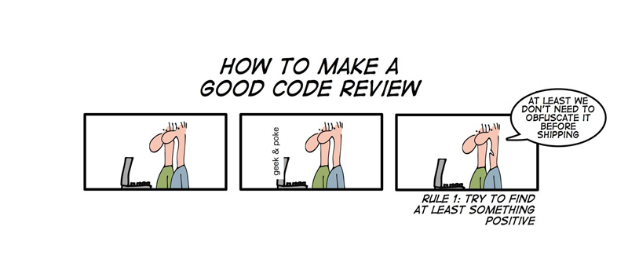

Presenting a Milestone

Top The presentation of an implementation must (usually) proceed in a top-down fashion. The phrase “top down” means that the presentation starts with a high-level overview and then explains the path to the most complex and most likely-to-be-buggy or ill-designed pieces.
an explanation of all concepts (from the information world) that require an implementation as a separate component (class, module) and their hierarchical relationship to each other; and
a brief listing of the purpose statements of the public functionality of the major component and its major private auxiliaries.
For an example, consider the Maze board component. A proper understanding of its
role demands several concepts: the coordinate system; the tiles and their
connectors; the direction of entering and exiting a connector; and perhaps how
the geometry of a graphically rendered board. One way to explain their
relationship is to draw an ASCII diagram in the —
|
board |
| |
|----> tiles |
| | |
| |----> treasures |
| | |
| |----> connectors |
| | |
| |----> connector entry and exit |
| | |
| | |
| v |
|----> coordinate relative to its dimensions |
| |
[shift-and-insert ; insert ‘t‘ into ‘b‘ after sliding row or column ‘n‘ in direction ‘dir‘; ; computes new board ‘nub‘ and the leftover tile ‘nutile‘ (->i ([b board?] [t tile?] [n natural?] [d Direction?]) #:pre (b n d) (proper-place? b n d) (values (nub board?) (nutile tile?)))] [can-reach? #; (can-reach? b f t) ; is there a path from ‘f‘ to ‘t‘ on b (-> board? coordinate? coordinate? boolean?)]
Providing this overview of information-data concepts plus basic functionality gives a panel a chance to reason through the high-level design, exposing gaps or misplaced pieces. It also is the entry point for the second half of the code walk.
Down Once the big picture is understood, the presentation must focus on the difficult parts of the code, the parts that may contain coding bugs.
For this part of the code walk, it is best to lead the panel from the public
entry point into the component to the complex code—
; a while-based, worklist algorithm ; follows the "paths" that radiate out from a tile at coordinate ‘from‘ ; using a plain-list accumulator to prevent chasing cycles (define (can-reach? rb from to) ...)
#; {[Listof (Cons Coordinate Dir)]} (define from-exits (tile-key-exits (board-tile-key rb from))) (define worklist0 (map (λ (x) (cons from x)) from-exits)) #; {accumulator [Listof Coordinate]} (let traverse ([worklist worklist0] [seen '()]) (match worklist ['() #false] [(cons (cons (? (λ (here) (equal? to here))) entry) others) #true] [(cons (cons here entry) others) (define more (where-can-I-go-legally rb here entry seen)) (traverse (append more others) (cons here seen))]))
#; {Board Coordinate Dir [Hash Coordinate N] -> [Listof (Cons Coordinate Dir)]} ; if an avatar is on ‘here‘ and entered the tile via ‘entry‘ where ; can it go on board ‘rb‘ – without re-entering a ‘seen‘ tile (define (where-can-I-go-legally rb here entry seen) (for*/list ([n*t {(tile-key-gofrom (board-tile-key rb here)) here entry}] [nxt (in-value (car n*t))] #:when (let ([all-exits (tile-key-exits (board-tile-key rb nxt))] [exit-here-needs-entry-nxt (cdr n*t)]) (and (member exit-here-needs-entry-nxt all-exits) (not (member nxt seen))))) n*t))